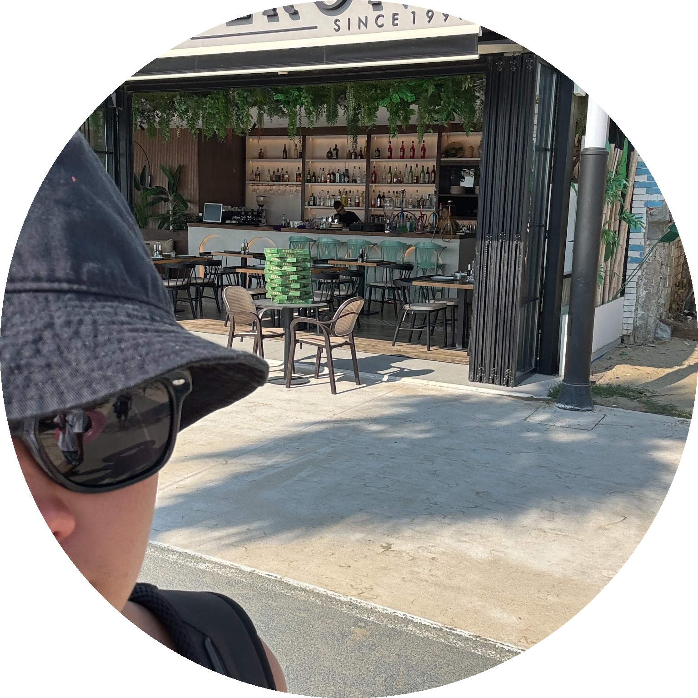

MOJE CV

Coś o mnie
Mam na imię William ,mam 16 lat i chodzę do trzeciej klasy liceum
Bardzo lubię grać w gry komputerowe np. csgo
Potrafię grać na gitarze
Lubię grać w piłkę nożną i koszykówkę
Bardzo dobrze potrafię ścinać włosy
Moje kompetencje informatyczne
Znam podstawy pythona.
Podstawy html. Potrafię stworzyć stronę internetową
Excel
Programowanie scratch
Potrafię montować filmy
Czego się chcę nauczyć w przyszłości?
Chciałbym sie nauczyć programowania
Moim celem jest zrobienie pierwszej pompki na rękach
Chciałbym się nauczyć tworzyć bardzo rozwinięte strony internetowe
Plany na przyszłość
Bardzo chciałbym zostać barberem
Założe własny salon barberski
Bardzo chciałbym się dostać na politechnike
Po ukończeniu szkoły średniej na pewno nie będę studiować informatyki
Czego się nauczyłem w 2 klasie
Poznałem wiele onowych rzeczy na lekcjach informatyki
Udoskonaliłem swoje umiejętności w programowaniu